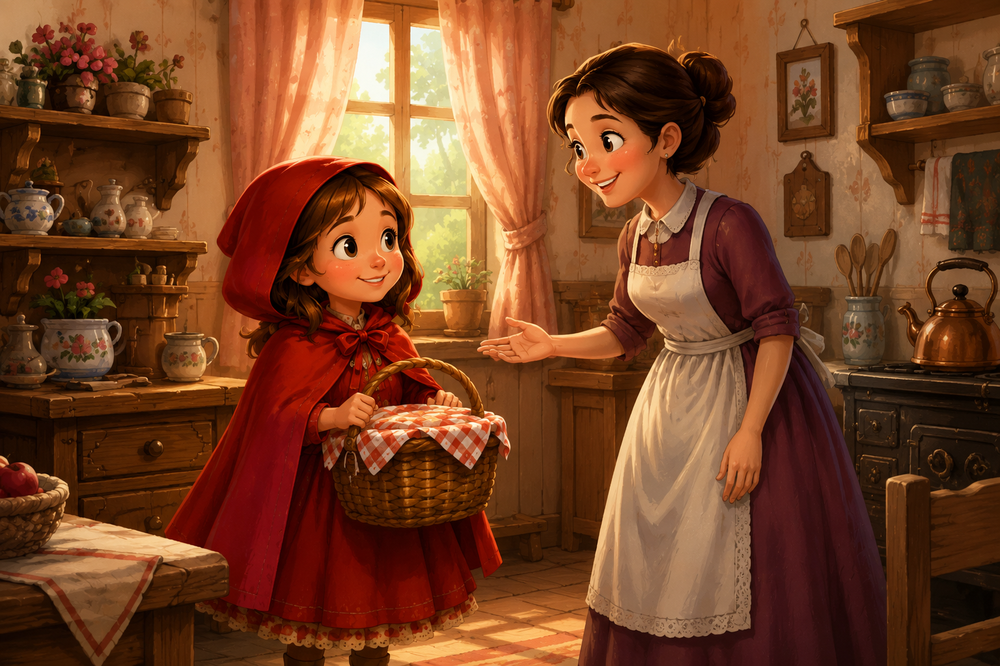
1. La cesta para la abuela
Caperucita Roja vive con su mamá cerca del bosque. Un día, su madre le pide que lleve una cesta con comida y dulces a su abuela, que está enferma. Antes de irse, su madre le recomienda: "No te apartes del camino y ten cuidado con el lobo."
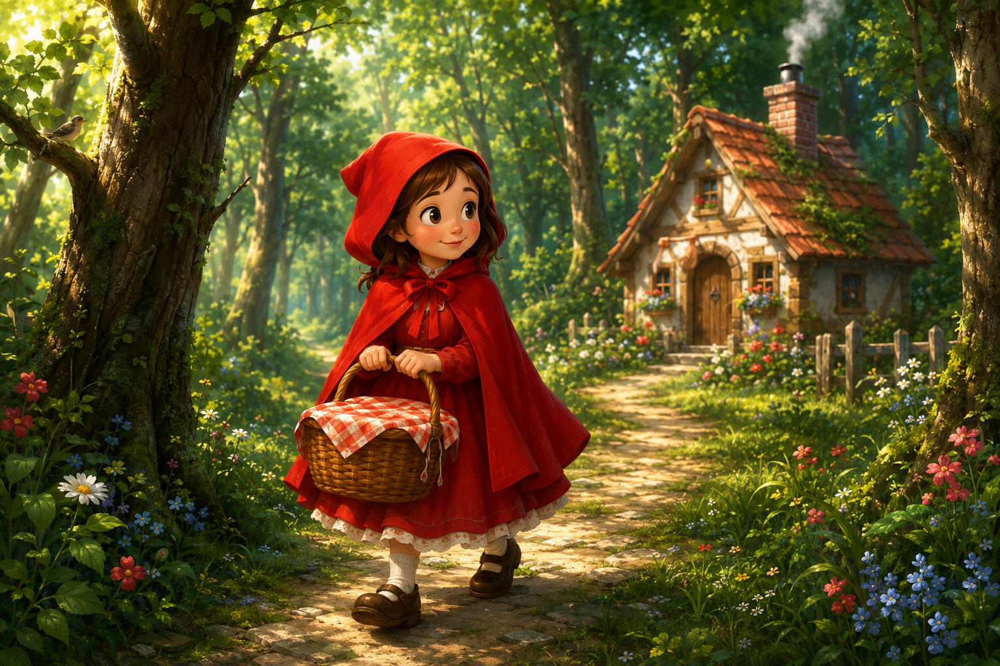
2. El camino por el bosque
Caperucita se adentra en el bosque por el camino que conoce desde pequeña. Todo está lleno de flores, pájaros y mariposas. El bosque es hermoso, pero también misterioso.
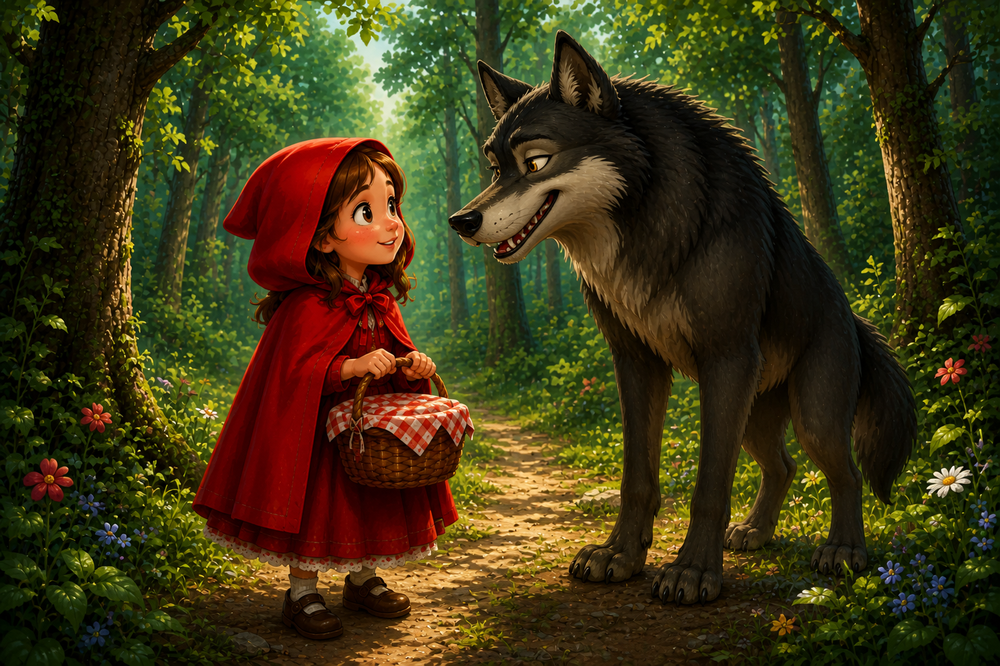
3. El encuentro con el lobo
De repente, un lobo aparece y le pregunta a dónde va. Caperucita, sin saber que es peligroso, le dice que va a casa de su abuela. El lobo, muy astuto, piensa en un plan para engañarlas a las dos.
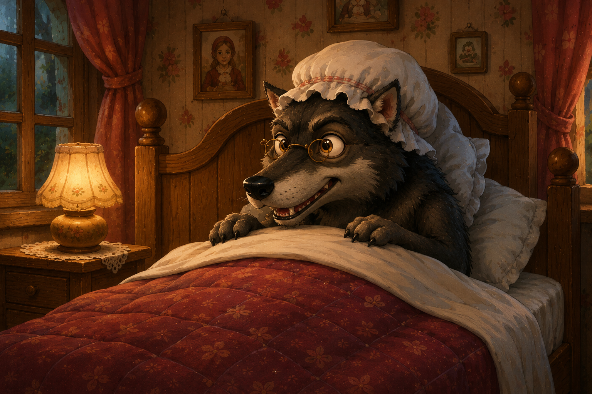
4. La casa de la abuela
El lobo corre rápidamente por el bosque y llega primero a la casa de la abuela. Llama a la puerta y, al entrar, la engaña y la encierra en el armario. Luego se pone su gorro y sus gafas y se acuesta en la cama.
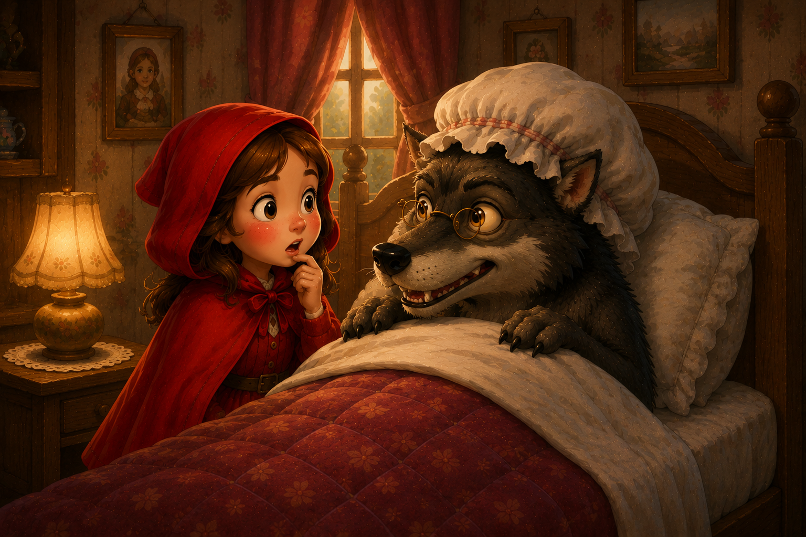
5. Una abuela extraña
Caperucita llega a la casa y se sorprende al ver a su abuela diferente. Sus ojos, sus orejas y sus dientes son muy grandes. Entonces el lobo no puede más y salta sobre ella, pero...
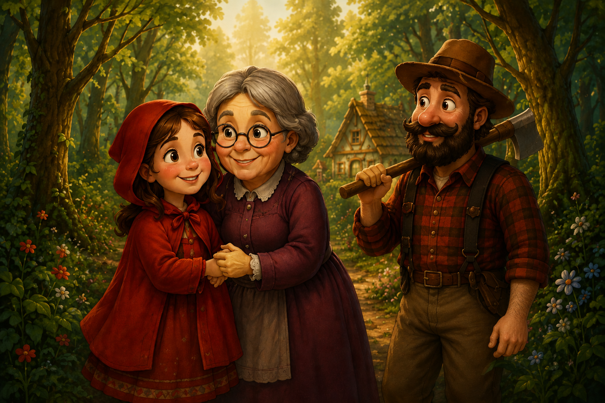
6. El final feliz
Un leñador que pasaba por allí escucha los gritos y entra a la casa. Salva a Caperucita y a la abuela, y el lobo escapa asustado. Caperucita aprende la lección y nunca más vuelve a hablar con extraños.
“A veces, lo más importante no es el camino que tomas, sino con quién lo compartes.”
Personajes
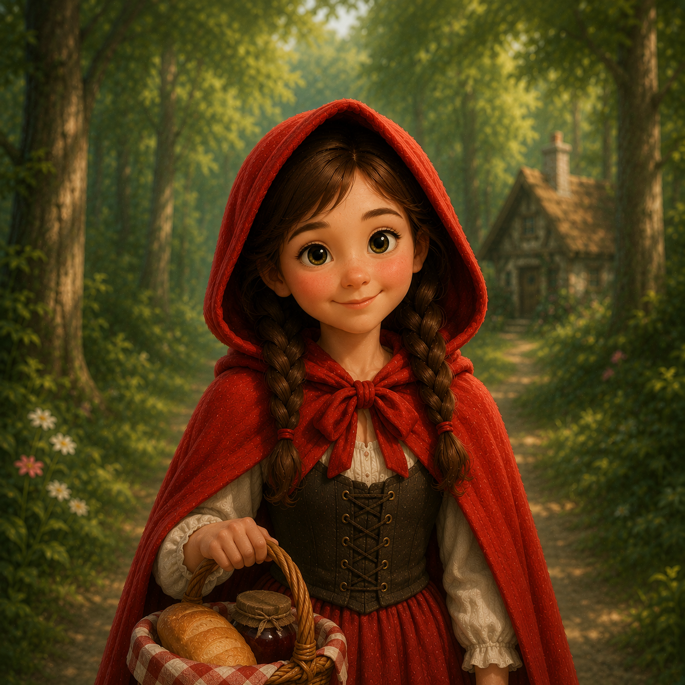
Caperucita Roja
Una niña dulce, valiente y curiosa que siempre busca hacer lo correcto.
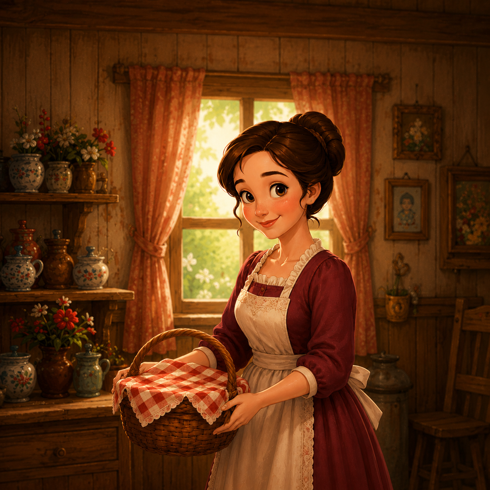
La mamá
Cariñosa y sabia, siempre cuida de Caperucita y quiere lo mejor para ella.
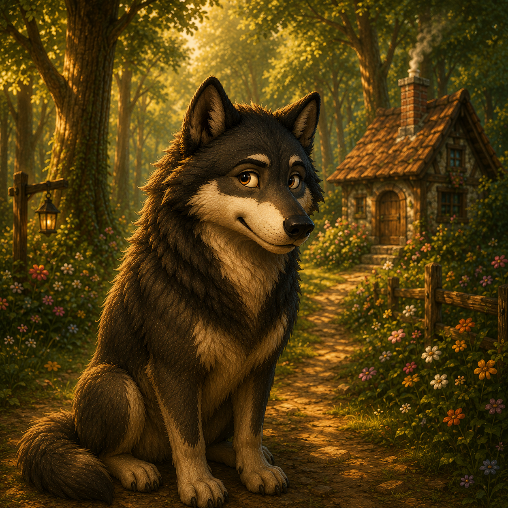
El lobo
Astuto y engañoso, siempre busca la forma de conseguir lo que quiere.
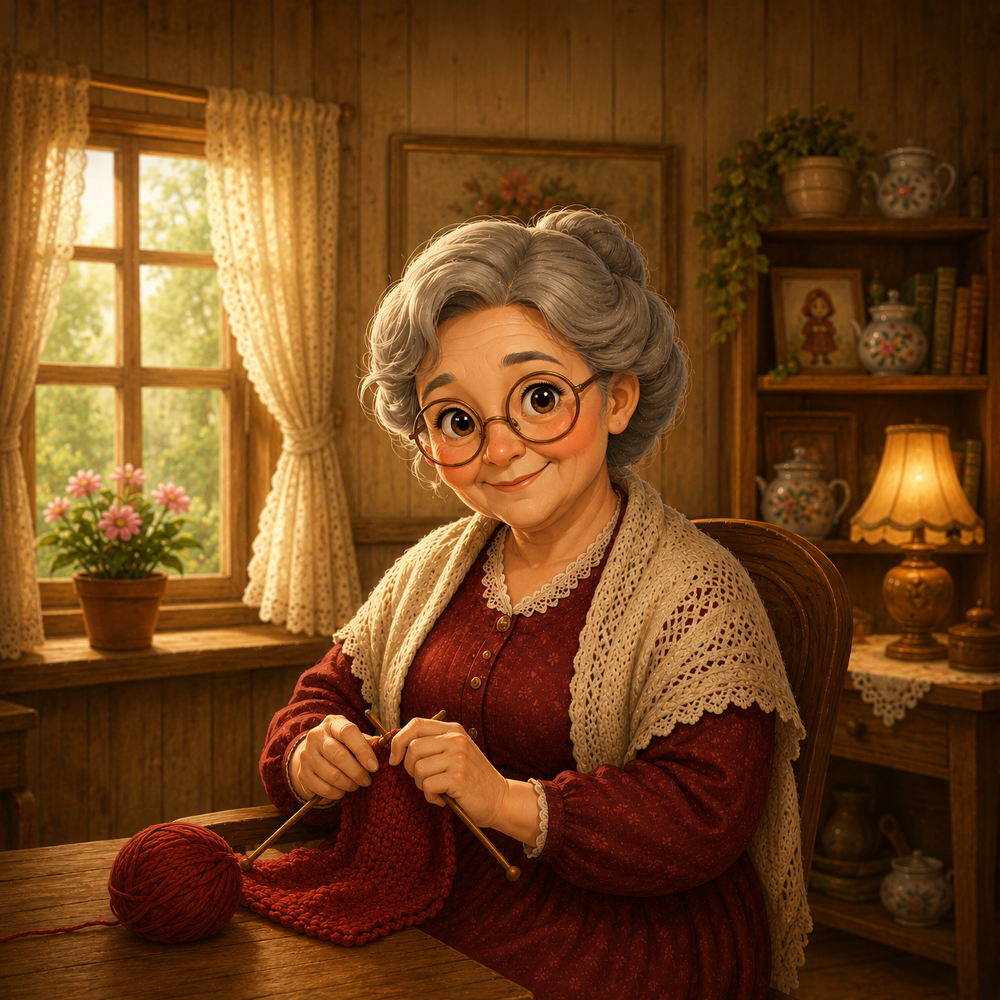
La abuela
Amable y buena, vive en el bosque y siempre recibe con alegría a Caperucita.
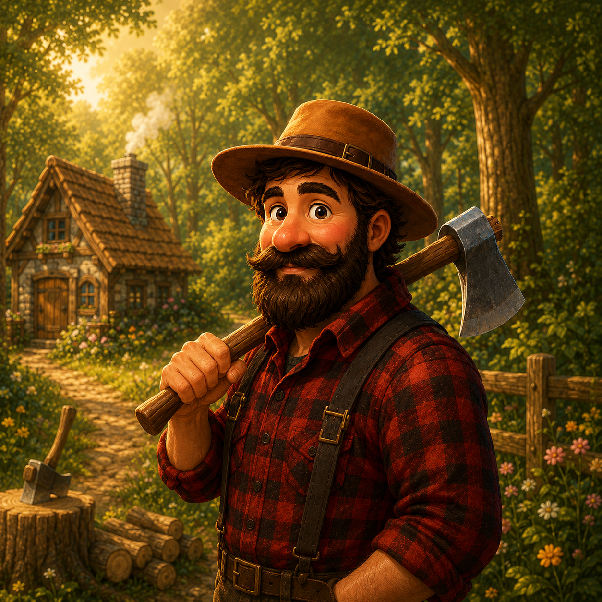
El leñador
Fuerte y valiente, ayuda a los demás y protege a los inocentes.
Galería
Sobre el Proyecto
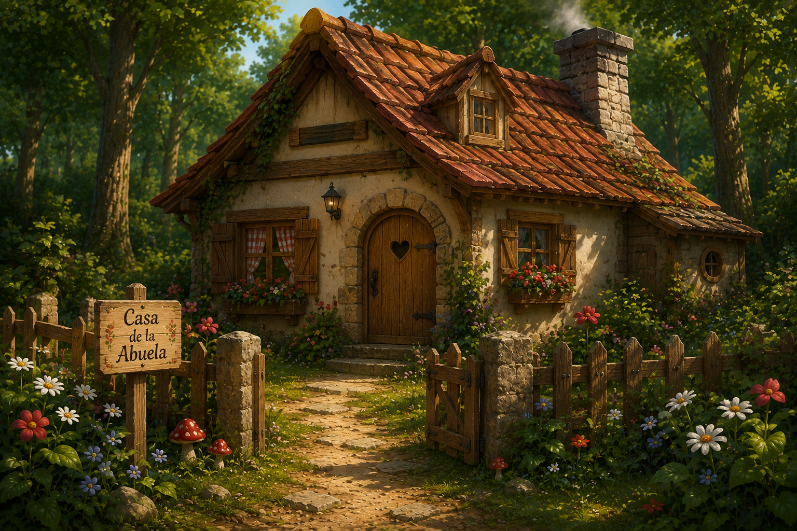
Este proyecto busca mantener viva la magia de los cuentos clásicos mediante ilustraciones originales y una experiencia de lectura sencilla, accesible y encantadora para grandes y pequeños.